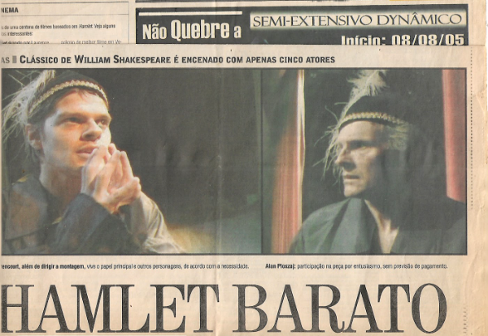
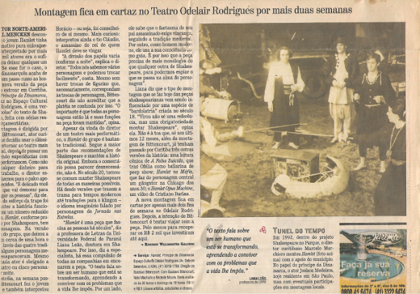

Hamlet, príncipe da Dinamarca(ator, produtor e diretor)
Direção em parceria com Neto Machado. Em cena: Gustavo Bitencourt e Neto Machado. Participações incidentais de Alan Ploszaj (em vídeo) e Stephany Mattanó (intervenção). Temporada única de um mês, Teatro Odelair Rodrigues, Curitiba, agosto de 2005.
O que me interessava no Hamlet era a estrutura. Ela funciona quase como um poema: as coisas rimam, uma ação se repete, os gestos se espelham. Montei a peça inteira, com todos os personagens do texto original — só que cada personagem era um movimento, não um ator. Éramos dois em cena.
Na divulgação, era dado a entender que se tratava de uma montagem integral do texto original.
Caderno G, Gazeta do Povo, 04/08/2005


07